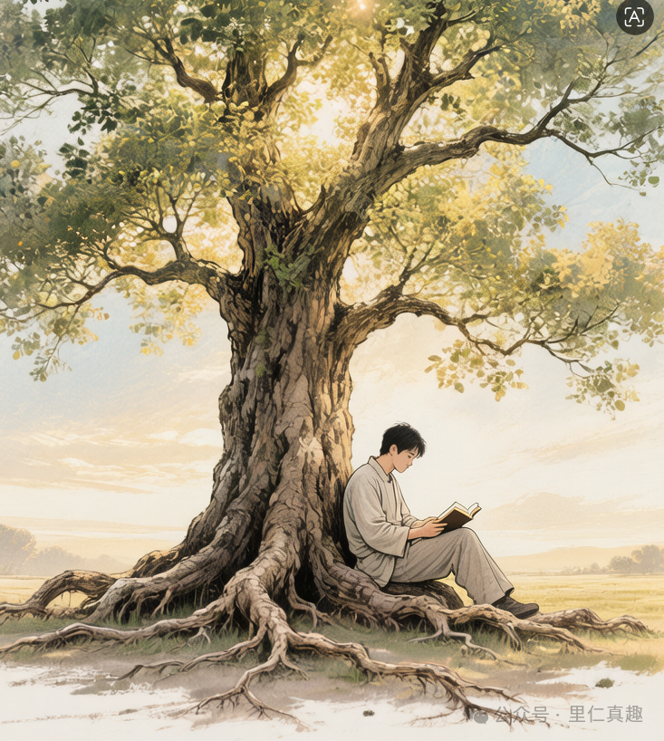

生命游戏之原生家庭：
幸福观和无常观
一生很短，一生也很长。如果要给普通人平凡的一生寻找人间值得，我想，应该是：那些短暂却珍贵，无常也恒久的幸福瞬间。
以我为例，以下是几个平凡生命的幸福时光。
第一个瞬间：两个人，想唱就唱的马路时光
我和妻子曾经有过一段非常美好的二人世界。那时候我们工资都不高，每个月收入要精打细算，妻子专门准备一个记账本。如果超支，就愁云满面，说要过紧日子了；有节余，就很开心，拉我下馆子。
我的一个同学，当年他独自在异乡打拼，他的妻子也是我的同学，大家都是好友，有一次他说，他非常喜欢晚上给他妻子打电话，电话里甚至唱歌：异乡的午夜特别冷清，一个男人和一颗热切的心……
他的话让我感慨了好久。我和妻子也有一段马路边高声放歌的时光，那时我们住三环路周边，车流不休，噪音很大，我俩却在路边飙高音，她唱"青藏高原"，我唱"我的太阳"，乐在其中，不知老之将至。
所谓荒腔走板，路人侧目，我们一点也不在乎。
喧嚣的街道成了我们的舞台，
昏暗的路灯是我们的聚光灯。
烛光晚餐我们也有过，不是在西餐厅，是在家里，一根生日蜡烛，两盘简菜。郊游也是，背着水壶和面包，骑自行车就出发，去一个没去过的地方，无所谓风景，无所谓富有。
这些短暂的幸福时刻，当时觉得寻常，回过头看，全值得珍藏。
第二个瞬间：孩子出生后，全家人的"高光时刻"
女儿出生以后，我们家进入了一段堪称"幸福高浓度"的时光。全家人围着她转。她天真、活泼，特别爱玩，我们全都是她的玩伴。我和妻子轮流陪她搭积木、扮动物、在地上打滚。岳父岳母也来了，两个老人平时严肃寡言，到了外孙女面前，忽然都变成了"老玩童"——趴在地上当马骑，躲在窗帘后面玩捉迷藏，笑得比孩子还大声。
那种全家人都把一件事——"陪孩子玩"——当成头等大事的日子，现在想起来，仍然觉得奢侈。
因为它需要条件：需要全家人身体健康，需要彼此关系和睦，需要没有人被生计压得喘不过气。这三个条件同时具备，并不容易。

岁月静好，以书为伴——平凡日子里的安宁
我家客厅有一面巨大的镜子，我和女儿经常在镜子前跳一种我们自编的舞。我们有时学电视上的机器人，有时学流行的街舞，有时模仿老年人的广场舞，总之，镜子前经常有两个小丑出没，欢声笑语不断。但十年后，我们搬家了，那面大镜子蒙上尘垢。青春期的女儿甚至都不想搭理我。
那些美好时光就渐渐隐入尘烟。
第三个瞬间：老人的榜样，从苦水中泡出来的幸福时光
这条很奢侈，也很容易被忽略。
我父亲七十多岁时，还回老家，一个人，耗时4个月，完成老家一套房子的装修。房子装修得很漂亮，但两位老人为了照顾孙女，毅然搬家到成都，新房子也只是过年时偶尔住几天。
现在，老父亲年过八十，身体还硬朗得很。有阵子做种植牙，要多次重返城中心的医院，倒两趟公交，单程两个多小时。他没找任何人陪，自己查好路线，早上出门，下午回来，搞定。
问他：要不要打车？要不要开车送你？
他说："这点小事，别管。"
八十多岁，一个人，两小时公交，挂号、排队、治疗、手术、拿药，再花两小时坐回来。这背后意味着什么？意味着他的身体还在正常运转，意味着他的头脑仍然清晰，意味着他还有"一个人也能搞定"的底气。
我母亲也快八十了，身体比父亲差很多，有严重的骨质疏松，被戏称：瓷娃娃。最近几年，骨折三五次。但她心态极好，是虔诚的念佛人。每次聚餐，母亲是坚定的打包者，哪怕只剩一根排骨，一小口饭，她都不会放弃，全部打包带走。有时打包的菜放在冰箱里，放太久变质了，她还说：没关系，给虫虫蚂蚁吃。
我的岳父，在龙泉的邻区种地种蔬菜，每年收获的油菜籽好几百斤。他一种就是十多年，自称：老农民。剩饭没有不吃光的。啃过的骨头，他也不扔，说：留给小花。小花是他菜地附近的一条流浪狗。
"够吃就行，多想也没用。"这话朴素，但放在今天焦虑横行的环境里，简直是一剂奢侈品级别的安神药。
平凡人生的高光时刻，到底有哪些？
如果把"人生奢侈品"当成一个正经课题来拆解，它大概分布在几个维度——
不是跑马拉松的成绩，而是"醒来时身体不酸痛，有足够精力过完一天"的基础状态。很多人二十多岁就开始透支：熬夜、久坐、饮食混乱、情绪高压。等到身体亮红灯，才发现之前那些"没事，我还扛得住"的日子，其实是最贵的。
身体好，是一切"奢侈品"的底座。底座塌了，上面什么都摆不住。
每个人心里都有一个"快乐系统"——就是那些让你觉得"活着挺好"的小事。有人是读一本好书，有人是泡一壶好茶，有人是傍晚散步时听风的声音。
问题是，很多人的快乐系统，随着年龄增长，逐渐离线了。工作越来越忙，孩子越来越操心，父母开始衰老，自己的精力也在下降——这时候，如果快乐系统已经停摆很久，人就会进入一种"机械运转"状态：每天在做事，但很少在"感受"。
重建快乐系统，不是要你去度假或买什么，而是重新允许自己为一堆小事心动——一碗面很好吃，怔了一下。路边花开得热闹，停下来看了五秒。孩子说了一句好玩的话，你笑了，不是敷衍的笑，是真的觉得好笑。
物质的作用，是提供"安全感底座"，而不是填充"欲望的无底洞"。真正聪明的活法，是在"够用"和"过度"之间找到一个属于自己的界碑：越过这条线，更多的物质不会带来更多的幸福，只会带来更多的牵绊和焦虑。
我母亲那句"够吃就行"，不是消极，是她八十岁才活出来的通透。很多人穷其一生，都没能跨过"物质=幸福"这个认知门槛。
幸福，是一种传承
为什么我能在路边高声唱歌，而不在乎路人怎么看？为什么我觉得一根蜡烛两盘简菜就是烛光晚餐，而不是将就？为什么和女儿在镜子前扮小丑，我觉得那是人生乐事，而不是浪费时间？
大概，是因为我在原生家庭里，就是这样被教出来的。
父亲的"这点小事，别管"，是一种对自己能力的笃定。母亲的"够吃就行"，是一种对生活的通透。岳父留给流浪狗的骨头，是一种对世界温柔的习惯。
这些不是大道理，是活法。是日复一日、浑然不觉地，刻进你骨子里的一套关于"什么值得在乎，什么不值得"的判断系统。
我们经常说，原生家庭给人留下伤痕。这是真的。但原生家庭留给我们的，除了伤痕，还有养分——而且很多时候，我们只看见了伤痕，却忘了那些养分。今天，我试着回想的，就是那些养分。
幸福本来不贵，是我们把它弄贵了
今天的年轻人，面对的幸福叙事，比我们那一代强烈得多。社交媒体把"好生活"的标准拍在你脸上——要有格调，要喝手冲咖啡，要背看得出来的包，要发得出令人羡慕的朋友圈。生活品质"只高不低"，一旦习惯了某种消费水准，就再也接受不了"普通人的生活"。
这是一条单向的欲望赛道：你永远在追一个更高的标准，却永远追不到头。
更深的问题在于——把"消费能力"等同于"人生价值"。如果一个人只能用"我背什么包、我去哪里旅行"来定义自己，那他的自我是非常脆弱的，因为这些东西随时可以被拿走。
而真正的自我，应该建立在那些拿不走的东西上：你的身体状态，你和家人的关系，你在平凡日子里找到快乐的能力。
在无常里，找到值得珍惜的东西
所有的幸福都是无常的。镜子前的两个小丑，终究会散场。马路边的高声歌唱，终究会停下来。老人们那份笃定通透，终究也会有它走完的一天。
正因为无常，那些发生过的瞬间才珍贵。不是因为它们完美，而是因为它们真实存在过，而且是我们真正在场过的。
心理学家说，幸福感来自两个要素：一是有美好的事情发生，二是你注意到了它。第二件事，其实比第一件事更难。
现在，我经常做一件事：在某个普通的饭桌上，或者散步途中，或者和妻子看一部老电影的时候，我会停一下，在心里轻声说：
这一刻，挺好的。
就这一句。不需要更多。
这就是我从原生家庭学来的幸福观——
朴素，低调，但有分量。